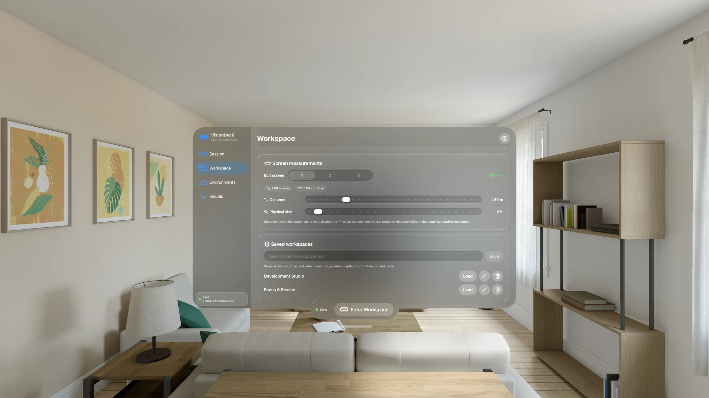

VisionDeck Free
One complete spatial Mac display.
 Full display quality
Full display quality- Audio and direct input
- All core controls

Up to five real Mac displays, arranged in space with exact size, distance, and curve.
Coming to the App Store · Apple Vision Pro + Apple silicon Mac
AI-enhanced presentation based on the real app
ExploreVisionDeck in action
Turn one Mac into your personal studio. Work in code, edit, write, design, or research—in the layout that fits the moment.
Five displays
See more and do more without adding hardware. VisionDeck streams up to five real Mac displays over your local network.


Precise by design
Arrange, fine-tune, and return to the exact spatial desk you built. Screen count, aspect, resolution, depth, size, rotation, tilt, and curve are remembered.
Built for performance
Clarity where you look
Keep small desktop text crisp without adding a buffered frame. Optional mipmaps can reduce shimmer on strongly angled screens.

Private by default
Honest pricing
One complete Mac display is free. Upgrade only when your workspace grows.
One complete spatial Mac display.
Up to five displays and advanced controls.
Run VisionDeck on your Apple silicon Mac.
For eligible new subscribers. The selected plan renews automatically unless cancelled. The App Store confirms local pricing and eligibility before purchase.
A better way to work in spatial computing. Be first in line when VisionDeck launches on the App Store.